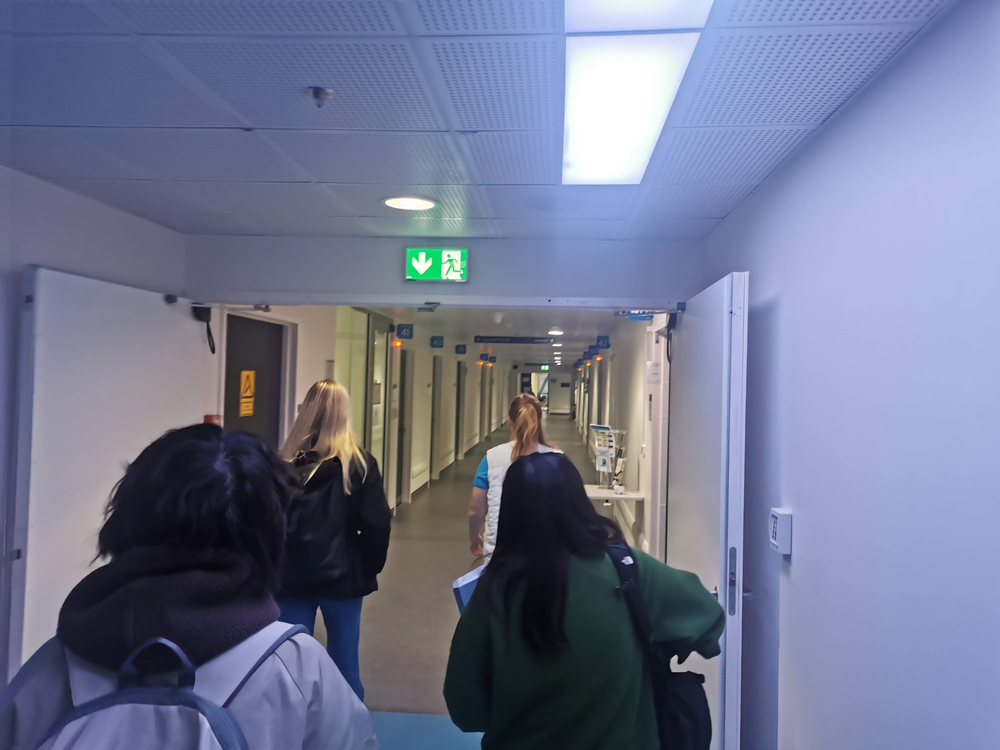
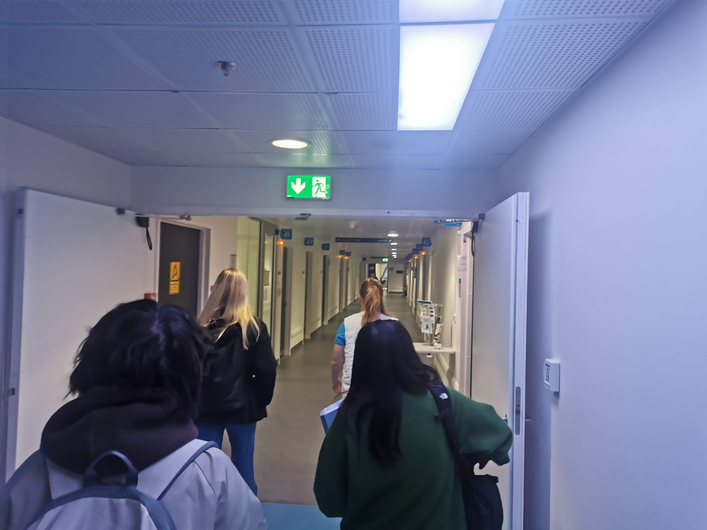
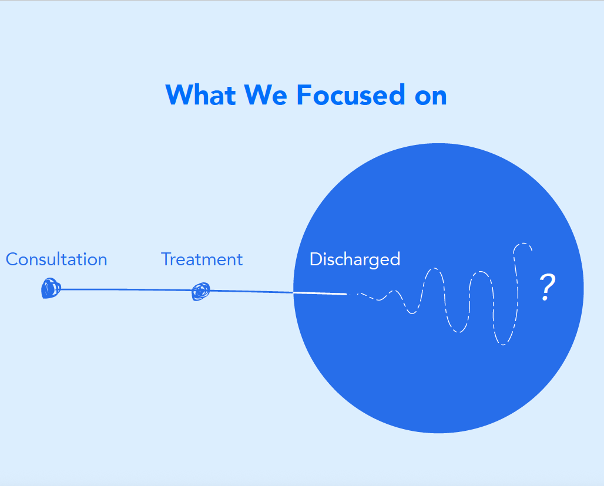
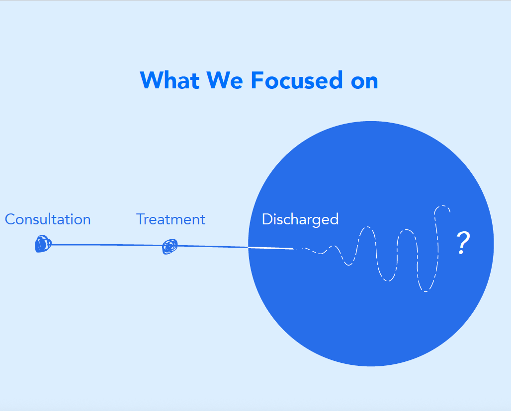

Image Title
Image description goes here
Image description goes here

*Offboarding refers to the process of transitioning patients from hospital care back to their normal lives with proper support and resources.
September 2024 - January 2025
Filip Vidal Andersson, Raffael Styger, Jasmin Rølle Ørum and Rio Suzuki
I adapted Braun and Clarke’s (2006) six-step thematic analysis framework to suit the specific goals and context of our project. To support synthesis, I also developed a giga empathy map that captured all interview data and helped identify recurring patterns.
With my background in web design, I took full responsibility for structuring the UX and designing the UI of the app—the main digital touchpoint in the CareBridge system. The original concept was quite rough, so I worked to refine and coordinate the design, ensuring it made sense through iterative user testing and practical experience.
The køge hospital surgen, they are looking for tool which can facilitate a deeper and more equal dialouge and support the difficult conversation in a cancer clinic.
Due to the sensitivity of the topic, direct access to patients was not feasible. Instead, we engaged with cancer survivors, leading our primary research to naturally pivot towards post-cancer support. Acknowledging this shift, we obtained early-stage confirmation from the client (the surgical team) to ensure alignment with their expectations.
 

Through our research, we discovered a critical gap in the post-discharge system: there was no structured bridge between hospital care and the Danish Cancer Society, which serves as the primary coordinator for various volunteer-based organizations. This lack of coordination often leaves survivors feeling lost once their cancer treatment pathway ends.
""It is not healthy to be in the system forever."
"We need a tool that gently pushes them away."
– Surgeon, Køge Hospital"
 

CareBridge is a system that designed to bridge the gap between the Danish Cancer Society and the healthcare network, such as Køge Hospital, helping patients navigate their post-cancer journey confidentaly.
The application is introduced to patients by a nurse at the point of discharge. A few weeks later, when many survivors experience emotional lows, the app sends reminders, encouraging engagement.
Upon initial sign-up, users can personalize their experience by selecting relevant information categories, such as oncology cancer, stoma care, late effects, and dietary guidance. These preferences can be updated at any time, ensuring access to the right information at the right moment.
Personalized Home: A dynamic dashboard that adapts to users' daily moods and conditions, offering tailored information and resources—crucial for survivors still experiencing late effects.
Connect: A medically verified cancer patient and survivor-based platform enabling survivors to connect with peers, join support networks, or even organize informal gatherings to share and learn from real experiences.
Talk: A direct line to healthcare professionals from the Danish Cancer Society and Køge Hospital, consolidating existing services into one accessible platform.
Events: A centralized calendar featuring relevant events in one place, with recorded sessions available for users experiencing fatigue or psychological distress.
Milestones: A tracking feature for personal progress, with data collection capabilities to help healthcare providers identify patients needing additional support.
Graduation Mode: A transition feature that encourages survivors to take on volunteer roles, fostering community engagement while gradually shifting their relationship with the healthcare system. The existing one-year consultation system within the cancer care pathway remains a crucial touchpoint. At this stage, a nurse (and a doctor if necessary) assesses the survivor's condition and introduces Graduation Mode.
Working within a multicultural team required clear alignment of timelines and expectations. Visual note-taking and imagery proved effective tools for ensuring a shared understanding.
Testing a service involves more than evaluating individual touchpoints. It requires integration into the daily routines of stakeholders as well.
It is easy to become overwhelmed by tools. Critical reflection is necessary to ensure methods are relevant and research questions remain central.
Frequent and transparent discussions were essential. Creating a safe space for questions and feedback fostered collaboration and innovation.